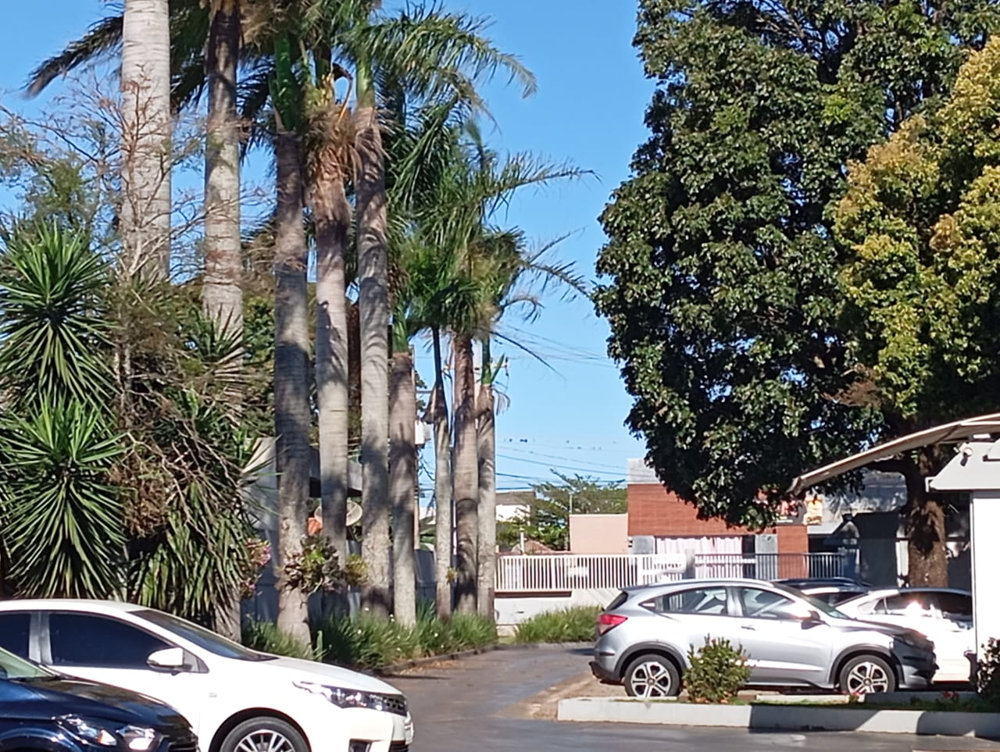
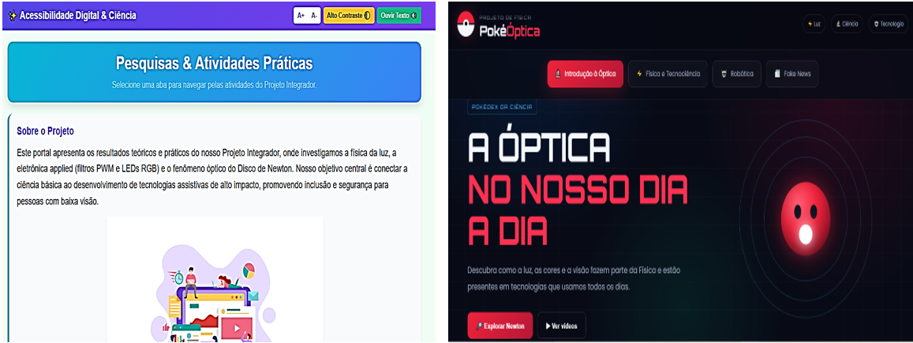
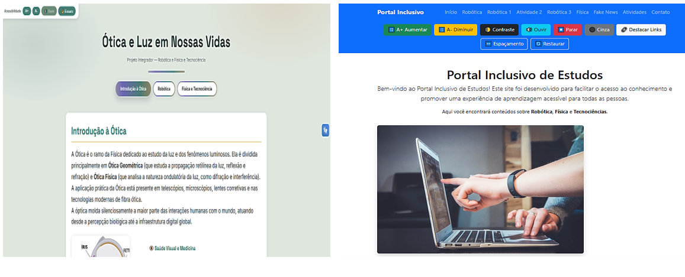
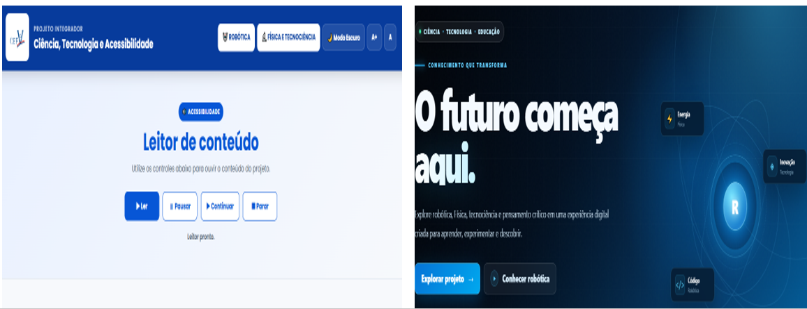
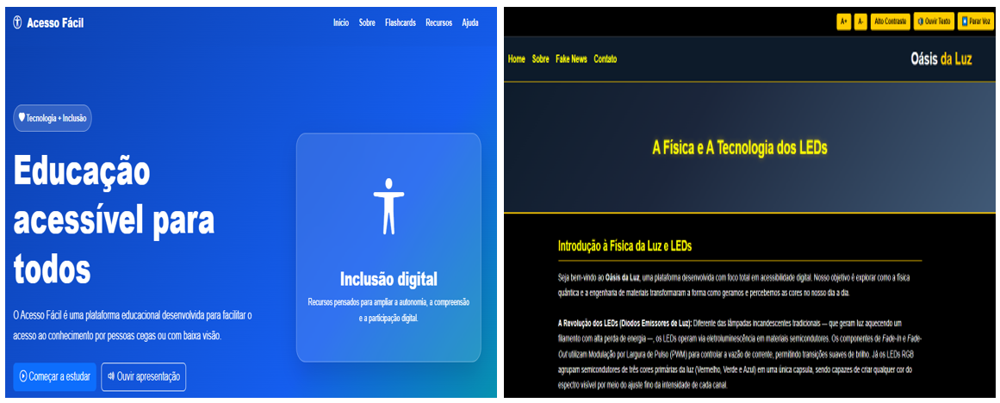
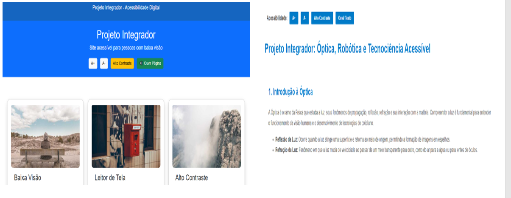

Programação Acessível
Sites estruturados com HTML5 semântico e comandos dinâmicos de acessibilidade (ajuste de fonte e alto contraste) para garantir autonomia a pessoas com baixa visão.
Bem-vindo ao nosso portal centralizador de projetos! Esta plataforma reúne as produções autorais desenvolvidas pelas equipes de estudantes no 2º Trimestre, integrando de forma prática e colaborativa os conhecimentos do nosso Caderno Pedagógico. Aqui, a tecnologia deixa de ser apenas linhas de código e se transforma em um instrumento real de inclusão social e empatia.
As atividades têm como foco a criação de soluções digitais que promovam a acessibilidade para pessoas com baixa visão ou cegueira, demonstrando como a tecnologia pode contribuir para ampliar a inclusão e a autonomia em diferentes contextos. O objetivo é estimular a reflexão crítica e a aplicação prática de conhecimentos, visando ao desenvolvimento de ambientes digitais mais acessíveis e inclusivos.
Sites estruturados com HTML5 semântico e comandos dinâmicos de acessibilidade (ajuste de fonte e alto contraste) para garantir autonomia a pessoas com baixa visão.
Seções dedicadas a desmistificar boatos e fake news sobre óptica e saúde visual, promovendo orientações baseadas em evidências científicas.
A integração real entre a Física (estudos sobre a óptica do olho humano e o comportamento da luz) e a Robótica (códigos, diagramas e protótipos de automação assistiva desenvolvidos no Tinkercad).
Navegue pelos links abaixo, teste as ferramentas de acessibilidade criadas pelos estudantes e conheça o resultado dessa jornada de aprendizado!





